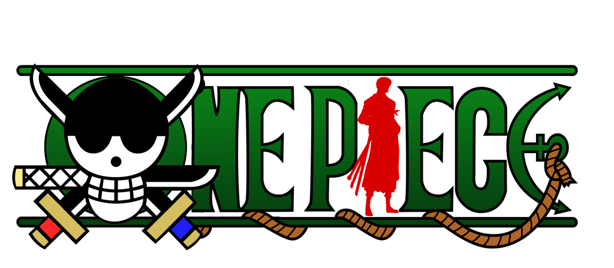

<!DOCTYPE html>
<html lang="en">
<head>
    <meta charset="UTF-8">
    <title>Projet </title>
</head>
<body>

</body>
</html><!DOCTYPE html>
<html lang="en">
<head>
    <meta charset="UTF-8">
    <title>Projet Web • Zoro</title>

    <link rel="icon" type="image/png" sizes="16x16" href="../../images/petitLogoOP.png">
    <link rel="stylesheet" href="styles-bonus-pages.css">
    <link rel="stylesheet" href="styles-bg.css">
    <link href="https://fonts.googleapis.com/css2?family=Work+Sans:wght@200&display=swap" rel="stylesheet">

    <script src="https://kit.fontawesome.com/9ac3ecdf58.js" crossorigin="anonymous"></script>
</head>
<body>
<header id="zoro">
    <div class="logo">
        </a>
    </div>
    <div class="titres">
        <h1>ZORO</h1>
    </div>
    <div class="boutonRetour">
        <a href="../index.html">
            <i class="fas fa-arrow-left"></i>
        </a>
    </div>
</header>
<main>
    <article>
        <h2>Informations globales</h2>
        <p>Roronoa Zoro le Chasseur de Pirates est un pirate, un ex-chasseur de pirates et l'un des protagonistes de One Piece. Il fut le premier membre à rejoindre l'Équipage du Chapeau de Paille, il en est le premier et principal épéiste. Son ambition est de devenir le meilleur sabreur au monde et il a d'ailleurs montré une volonté de fer dans le but d'y parvenir. C'est un maître escrimeur qui peut utiliser plusieurs styles de combat dont la particularité repose sur le nombre d'épées, ses capacités au combat sont telles qu'il donne parfois l'impression aux personnes extérieures à l'équipage d'être le véritable Capitaine.</p>
    </article>
    <div class="banniere">
        
    </div>
</main>
<footer>
    <p>Bases du Web</p>
    
    <p>Arthur Gillier</p>
</footer>
</body>
</html>